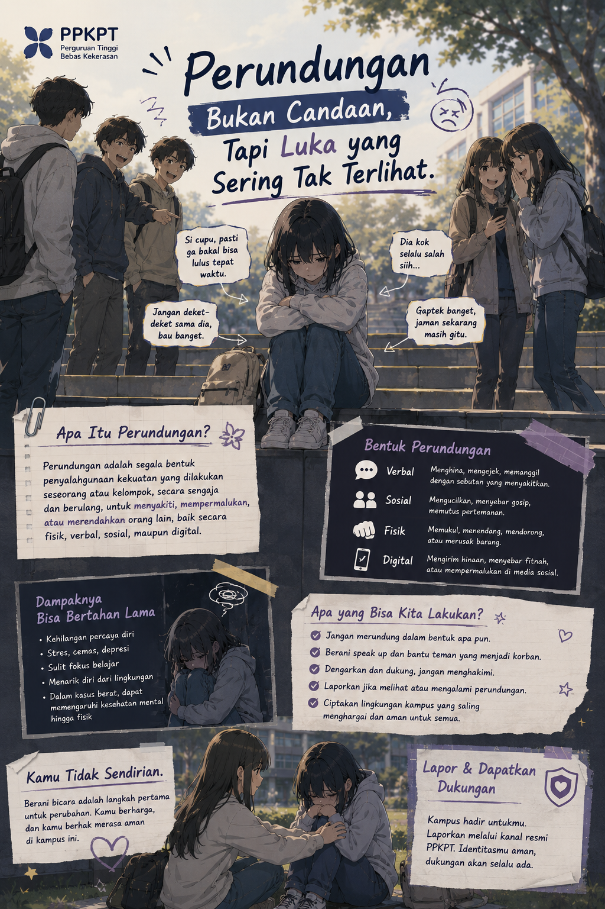
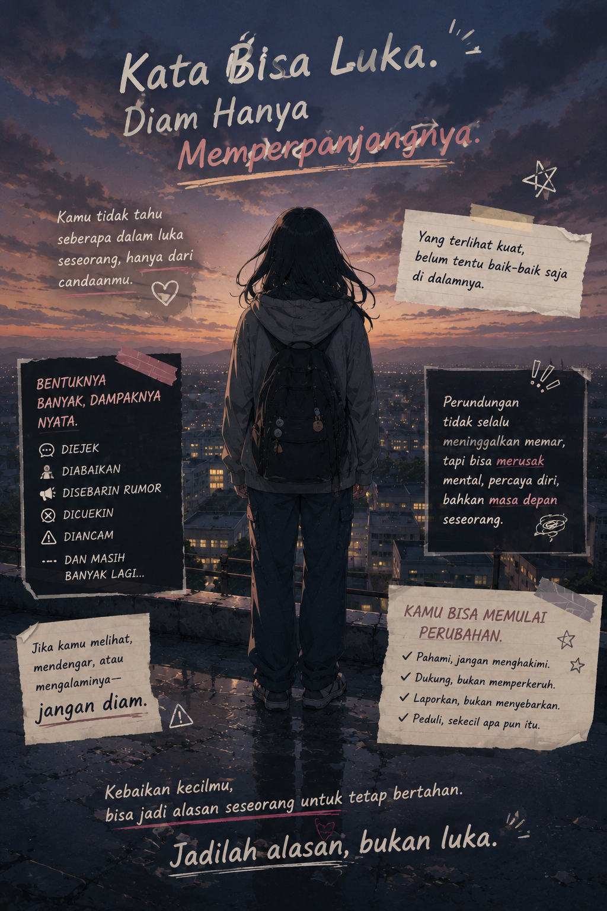

Apa Itu Perundungan?
Perundungan (bullying) adalah perilaku yang dilakukan secara sengaja, berulang, dan bertujuan
menyakiti, mengintimidasi, atau merendahkan orang lain, baik secara fisik, verbal, sosial, maupun
melalui media digital. Perundungan dapat terjadi di lingkungan kampus, sekolah, tempat kerja, maupun
di dunia maya, serta dapat memberikan dampak negatif terhadap kesehatan fisik dan mental korban.
Bentuk-Bentuk Perundungan
- Perundungan Verbal
Menghina atau mengejek,
Memanggil dengan julukan yang merendahkan,
Mengancam atau memaki.
- Perundungan Fisik
Memukul atau menendang,
Mendorong atau mencubit,
Merusak barang milik orang lain.
- Perundungan Sosial
Mengucilkan seseorang,
Menyebarkan gosip,
Menghasut orang lain untuk tidak berteman.
- Perundungan Siber (Cyberbullying)
Menghina melalui media sosial,
Menyebarkan foto atau informasi pribadi tanpa izin,
Mengirim pesan yang mengandung ancaman atau pelecehan.

Dampak Perundungan
Perundungan dapat menyebabkan berbagai dampak, antara lain:
Menurunnya rasa percaya diri.
Gangguan kesehatan mental, seperti stres, cemas, atau depresi.
Kesulitan berkonsentrasi saat belajar.
Menurunnya prestasi akademik.
Korban merasa takut atau tidak nyaman berada di lingkungan kampus.
Cara Mencegah Perundungan
Menghargai perbedaan setiap individu.
Menjalin komunikasi yang baik dengan sesama.
Tidak ikut menyebarkan gosip atau ejekan.
Berani menegur tindakan perundungan.
Menjadi teman yang peduli dan saling mendukung.
Jika Mengalami atau Menyaksikan Perundungan
Jika kamu mengalami atau melihat tindakan perundungan:
Tetap tenang dan jangan membalas dengan kekerasan.
Simpan bukti apabila terjadi perundungan secara digital.
Ceritakan kepada dosen, wali akademik, atau Satgas PPKPT.
Gunakan layanan pelaporan yang disediakan oleh kampus.
Dukung korban dan jangan menyalahkan mereka.
Lingkungan kampus yang aman dimulai dari sikap saling menghormati. Hentikan perundungan, berani peduli, dan jadilah bagian dari perubahan.